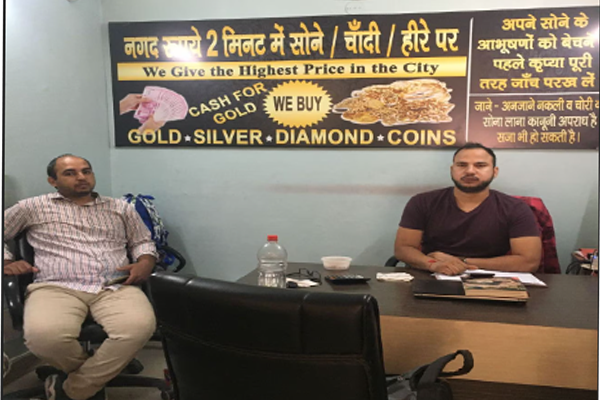

  <style>
    .team-member img {
      border-radius: 50%;
      width: 150px;
      height: 150px;
      object-fit: cover;
    }

    .team-member {
      text-align: center;
      margin-bottom: 30px;
    }

    .team-member h5 {
      margin-top: 15px;
      font-weight: bold;
    }

    .team-member p {
      color: #95a5a6;
    }

    .about-image {
      width: 100%;
      border-radius: 10px;
      box-shadow: 0 10px 30px rgba(0, 0, 0, 0.1);
    }

    .about-section {
      padding: 50px 0;
      color: black;
    }

    .about-content {
      margin-top: 30px;
    }

    .about-content h2 {
      color: #2c3e50;
    }

    .about-content p {
      color: #34495e;
      font-size: 1.1rem;
    }
  </style>


  <!-- About Us Section -->
  <section class="about-section">
    <div class="container">
      <!-- Title -->
      <div class="text-center">
        <h1>About Us</h1>
        <p class="lead">We are a passionate team dedicated to bringing you the best services.</p>
      </div>

      <!-- About Content -->
      <div class="row about-content">
        <div class="col-lg-6">
          <h2 class="text-black">Who We Are</h2>
          <p>
            <strong>JS Kuber in Gurgaon Sector 14, Gurgaon, Delhi</strong>

            JS Kuber in Gurgaon Sector 14, Gurgaon, Delhi is known to satisfactorily cater to the demands of its customer base. The business came into existence in 2015 and has, since then, been a known name in its field. It stands located at Shop No- 275, Near ICICI Bank, Sector 14-122007. Near ICICI Bank is a prominent landmark in the area and this establishment is in close proximity to the same. It has earned stamps like JD Verified, JD Pay substantiating the credentials of the business. The business strives to make for a positive experience through its offerings. The accepted modes of payment such as UPI, Visa / Master Card / Rupay, Cash, make every business transaction easy and seamless, contributing to making the entire process even more effective.
            
            Customer centricity is at the core of JS Kuber in Gurgaon Sector 14, Gurgaon, Delhi...
          </p>
        </div>
        <div class="col-lg-6">
          
        </div>
      </div>

      <!-- Team Section -->
      <div class="text-center mt-5">
        <h2>Meet Our Team</h2>
        <div class="row">
          <!-- Team Member 1 -->
          <div class="col-md-4 team-member">
            
            <h5>John Doe</h5>
            <p>CEO & Founder</p>
          </div>
          <!-- Team Member 2 -->
          <div class="col-md-4 team-member">
            
            <h5>Rajesh Gautam</h5>
            <p>owner</p>
          </div>
          <!-- Team Member 3 -->
          <div class="col-md-4 team-member">
            
            <h5>Michael Lee</h5>
            <p>Lead Developer</p>
          </div>
        </div>
      </div>
    </div>
  </section>

 